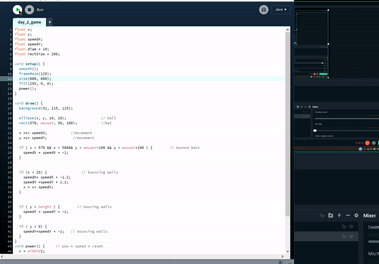
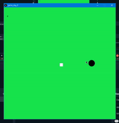

Project Details
Programming Bootcamp
- 
- 

Project Description:
Those are some of the tasks I did, at the programming boot camp at school. All of are mini games. I didn't code at all before starting the course but after the programming boot camp I decided to try and learn as much as I can. The games are very simple and most people are familiar with, if not they are extremely easy to play and understand. For the majority of my life I'be been loving games not only digital games but card board games card games and even strategical and knowledge games such as chess and crosswords. So the first game is a game known as pong and it uses the mouse movement. You control the bat with your mouse and the goal is to bounce back the ball to the wall as many times as possible. The second Green game is about a black sphere that chases the small square which moves with random speed and to random directions. The movement of the sphere is done with arrow keys on keyboard. The last game is the last day project where we all had to make something using our gained knowledge throughout the week. I made a bouncy game and called it "bouncy boi". The goal is to hit 100 score with the shortest amount of time. Controls are with the mouse movement and with left click the ball avatar jumps there is collision on the ground which makes it bounce back using gravity.
Design Vision
My design vision was quite simple. I knew from the begining that I wanted to do mini games things that I played when I was a child. Snake, pac-man, Pong I wanted to make games that would remind me of my past, because I loved playing them at that time. However, things didn't go as I expected them to go and I had to adapt to the situation and change my plan, I made games that I felt comfortable with and with the time I had I tried making them correct with as less errors as possible. After creating my first game Pong, I didn't feel excited our thrilled because I knew that what I made wasn't something that I came up with nor was the best one there is. Therefore, for my next projects I tried being as original as possible and creatings games that I came up with, I experimented with things and choose what works best for me. The lesson I learnt from this scourse is to try and create my own identity.